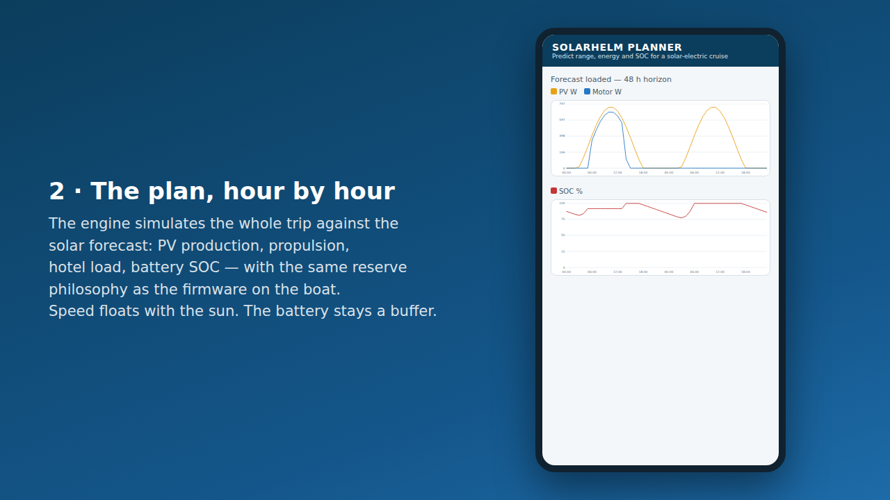

The idea
One control variable changes everything
A conventional cruise control holds speed and drains the battery to do it. SolarHelm targets 0 W of battery power and continuously trims the motor so propulsion follows solar production. No forecast in the loop, no coupling to any charger — the physics does the accounting, the controller follows it. That single trick is enough to cruise all day, day after day, without shore power. Read how it works →
Features
A complete system, boat to phone
Power-tracking control
Filtered, deadbanded PI with anti-windup and asymmetric ramps. Zero overshoot, proven in simulation graphs.Details →
Filtered, deadbanded PI with anti-windup and asymmetric ramps. Zero overshoot, proven in simulation graphs.Details →
Fail-safe by hardware
MANUAL is the relay's default. Any fault — stale data, crash, brownout — ends with the helm in your hands.Details →
MANUAL is the relay's default. Any fault — stale data, crash, brownout — ends with the helm in your hands.Details →
Voyage planner
Waypoints in, verdict out: departure sweep, solar stops, arrival SOC with uncertainty, six named safety gates.Details →
Waypoints in, verdict out: departure sweep, solar stops, arrival SOC with uncertainty, six named safety gates.Details →
Learns your boat
Telemetry refits the hull curve, calibrates uncertainty and flags drift — a fouled hull shows up in the numbers.Details →
Telemetry refits the hull curve, calibrates uncertainty and flags drift — a fouled hull shows up in the numbers.Details →
Open hardware path
ESP32-S3, Victron shunt, any 0–5 V motor controller. Drivers are plugins; no brand lock-in. Details →
ESP32-S3, Victron shunt, any 0–5 V motor controller. Drivers are plugins; no brand lock-in. Details →
Engineering you can audit
One C++ core for simulator and boat, 100% line coverage in CI, every claim linked to a doc. Details →
One C++ core for simulator and boat, 100% line coverage in CI, every claim linked to a doc. Details →
0 Wthe control target
285+unit tests, C++ and JS
100%line coverage, CI-enforced
13simulated scenarios
3costed build levels
See it
Sixty seconds of planner

▶ Watch the demo
Every number in the demo is computed by the app's real code — no faked screenshots. Or just open the app.
Built in the open
Research-grade honesty
Simulation first
The controller proved itself on 300–1500 W solar swings before any hardware existed — with committed graphs.
The controller proved itself on 300–1500 W solar swings before any hardware existed — with committed graphs.
Real-world validation
The Helios 11 case study: 3,000 nm on sunshine, every claim source-tagged, physics cross-checked.
The Helios 11 case study: 3,000 nm on sunshine, every claim source-tagged, physics cross-checked.
Everything documented
Control theory, safety requirements, motor-protection research, wiring, a gated test plan.
Control theory, safety requirements, motor-protection research, wiring, a gated test plan.
Get started
Three ways in
1 · Dream
What could your boat do on solar? The calculator estimates cruise speed, daily range and cost. Open the calculator →
What could your boat do on solar? The calculator estimates cruise speed, daily range and cost. Open the calculator →
2 · Plan
The planner app predicts range, SOC and arrival energy for real trips. Works offline, installs on your phone.Open the app →
The planner app predicts range, SOC and arrival energy for real trips. Works offline, installs on your phone.Open the app →
3 · Build
Bench kit from ~414 PLN, full drive system ~5,120 PLN, solar cruiser ~7,700 PLN — with a gated test protocol.Buying guide →
Bench kit from ~414 PLN, full drive system ~5,120 PLN, solar cruiser ~7,700 PLN — with a gated test protocol.Buying guide →
Safety first. SolarHelm generates a
low-power throttle signal only; it never switches propulsion current.
A normally-de-energized relay makes MANUAL the default whenever the
controller is unpowered, and an independent kill switch always
remains. Read
docs/SAFETY.md
before wiring anything. SolarHelm is not a certified navigation
system.